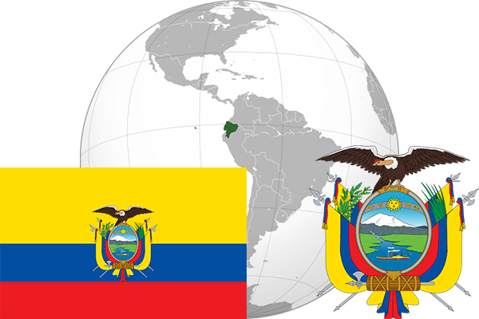

To`liq nomi: Ekvador Respublikasi
Region: Janubiy Amerikaning shimoliy-gʻarbiy qismi
Qonunchilik shakli: Respublika
Mustaqillik kuni : 24 may 1822 yil (Ispaniyadan)
Poytaxt: Kito
Maydoni: 283 560 km² (dunyoda 73 -o`rinda )
Chegaradosh davlatlari: Kolumbiya, Peru
Aholisi: 16 080 778 (dunyoda 68 -o`rinda, 2016 -yil roʻyxat)
Aholi zichligi: 47 /km²
Aholining o`rtacha yoshi: 76,65 yil ( 79,6 ayollar, 73,7 erkaklar)
Rasmiy tili: Ispan tili
Dini: Katolik
Pul birligi: AQSh dollari
Telefon prefiksi: +593
Internet domen: .ec
Xalqaro tashkilotlarga a`zoligi: BMT (1945– yildan), OPEC (Neftni eksport qiluvchi davlatlar tashkiloti)
Dengiz va okeanlarga chiqishi: Tinch okeani
YIM: Butun: $ 118,2 mlrd, Jon boshiga: $ 8980 (2011 - yil roʻyxati)
Yirik shaharlari: Kito, Guayakil